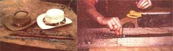

Highlight some headgear...give a great looking gift...or produce a profit.
My husband and I just hate to see anything go to waste when there ought to be a use for it. So when-during a drive to town-we encountered a dead pheasant that had been hit by a car ... we naturally stopped to pick the bird up.
After all, we couldn't leave the fowl's incredibly beautiful feathers- copperred, green, brown, and white-just lying there (we natural-born scroungers have an instinct for such potentially useful raw material). So Allan and I collected the unfortunate bird ... skinned it ... salted the hide down ... and stashed it in the garage to dry.
Before too long, however, the feathered leather found its way into the house, where it had a habit of falling out of closets (and onto people's heads) ... or being stuffed into one dark corner or another ... while we waited until some use -we knew we'd find one-would suggest itself.
Sure enough, it wasn't long before I spotted a hatband made of feathers ... and discovered our pheasant's true calling. The first thing we did was to tear up the skin (now dry and almost brittle), and separate the clusters of feathers into groups with similar colors and patterns. (The hide "backing" holds the clumps together until we're ready to use the individual feathers ... and thus eliminates "pheasant blizzards" when somebody opens the door unexpectedly. This sorting method also keeps the plumage's natural patterns intact, and gives a better impression of how the feathers should fall for the most "artistic" effect.)
While the "dress" of any colorful bird can be used to create attractive hatbands, the variety of feathers found on a pheasant allows a craftsperson to get half a dozen totally different effects from one hide. The neck feathers provide a rich, coppery color ... the bird's shoulder areas, with their brown and white design, are particularly effective ... while the gray-green, plumy feathers near the tail can be turned into a marvelously exotic creation.
We found that making feather hatbands is an easy craft, and requires few special tools or materials. You'll need scissors, glue, leather, a hole punch of some sort, and possibly a knife. (Use the dull edge of the latter tool to uncrimp feathers that have a little too much curl in them.) As to the plumage itself, ask your hunting friends (if you don't "forage" wild game yourself) for their bird skins, or-as we do-simply watch for fresh road kills at any time of the year.
The first step in hatband production is to cut some thin suede into a strip about three-quarters of an inch wide and 24 inches long. Tack the leather-at both ends-to a board to keep it flat or, better still, tape the ends around a cylindrical object (we use the cardboard can that once held our daughter's blocks) to make the band dry in a curve so the glue won't crack when the finished decoration is wrapped around a hat.
The feathers, as they come off the bird, are usually a little too long for easy use ... so trim them to about an inch or an inch and a half. (Just clip 'em-to length -from the skin, to avoid creating a lot of loose fluff.)
Then, starting at the right-hand end of the leather, glue the feathers' quills in place with the plumes' patterned tips pointing to the right. Make sure each layer is well anchored before going on to the next, but also make sure that you don't glue the whole feather down flat, since you want the finished hatband to have a little body and thickness.
Three feathers, placed evenly abreast and slightly overlapping at the sides, usually look better than the same plumes would if placed at random. The next threesome should then overlap the first (like fish scales), allowing about half to three-quarters of an inch of the previous row of feathers to show.
You can work straight across the band to the left end, or start from both ends and make your way toward the middle. The latter method, of course, leaves you with the problem of how to "finish" the band when you reach the center. We solved this by making a circular medallion design-using progressively smaller feathers lodged in a spot of glue-to cover the junction. (The tiny, white accent feathers on a pheasant's neck work well for this.) A piece of polished turquoise-or any other small token you'd like to so honor-also looks nice when centered in such a feather "nest".
As a finishing touch, punch holes in the ends of the band and cut a thin, leather thong to use as a tie.
A hatband takes about 20 minutes to work up, while a feathered choker can be completed in considerably less time. Both objects make much appreciated gifts or find ready markets-usually on a consignment basis- in gift shops or craft co-ops. (Another obvious place to display your hatbands would be any place where hats are sold ... particularly western wear stores.) We've seen feather adornments go for as much as $10, but Allan and I would rather trade our crafts ... for needed items of variable values.
We've found, too (now that we've begun to notice such things) that many people will wear almost anything around their hats ... including snakeskins, small animals' pelts, and so forth. So- if you're short of feathers-you can probably use your imagination to utilize some of those craft project odds and ends (that most handifolk have hanging around) to whip up a variety of "topper trimmin's".
There is, however, one cardinal rule to remember when you're making a feathered hatband: Don't ever sneeze!
|
 PHOTOS BY ALLAN BOYER Elizabeth glues each feather into place |
|
|